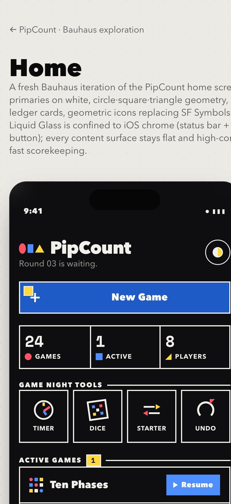
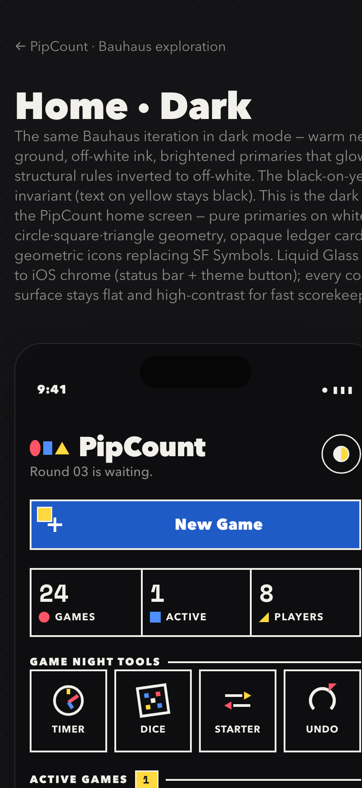

PipCount · Bauhaus
A fresh design iteration of PipCount (iOS 26+) built on the owner's Bauhaus reference board. Pure primaries on white — red, blue, yellow, black — composed from circle, square, and triangle. This is the first screen of a system; once the language is locked the rest (scoring, game picker, onboarding, paywall) follow mechanically. Light and dark are both designed as first-class modes.
- Design direction
- Bauhaus / De Stijl — geometric primaries, hard edges, opaque cards, structural black rules.
- Palette — light
- Palette — dark
- Voice
- Geometric sans (Avenir Next → Futura family). Monospaced digits for every score.
- Dark rule
- Inverted structure (off-white rules, never black-on-black); primaries brighten for luminance; black-on-yellow is invariant.
- iOS 26 posture
- Liquid Glass only on status bar + theme button. All content surfaces opaque for Bauhaus fidelity.
Home — light & dark
The full system in one screen, in both modes. Light keeps primaries on stark white; dark grounds them on warm near-black with brightened, glowing primaries.


{kind=link}
{kind=link}